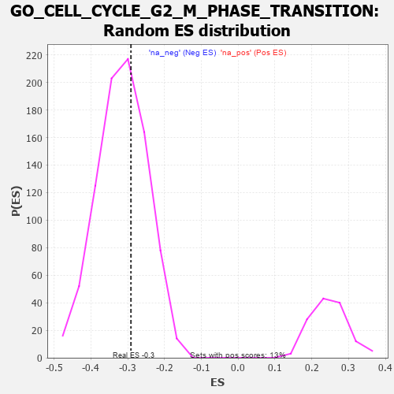

| | | Dataset | 7d |
| Phenotype | NoPhenotypeAvailable |
| Upregulated in class | na_neg |
| GeneSet | GO_CELL_CYCLE_G2_M_PHASE_TRANSITION |
| Enrichment Score (ES) | -0.29142135 |
| Normalized Enrichment Score (NES) | -0.9248971 |
| Nominal p-value | 0.62255466 |
| FDR q-value | 0.93010837 |
| FWER p-Value | 1.0 |
Table: GSEA Results Summary
 Fig 1: Enrichment plot: GO_CELL_CYCLE_G2_M_PHASE_TRANSITION
Fig 1: Enrichment plot: GO_CELL_CYCLE_G2_M_PHASE_TRANSITION
Profile of the Running ES Score & Positions of GeneSet Members on the Rank Ordered List
| PROBE | GENE SYMBOL | GENE_TITLE | RANK IN GENE LIST | RANK METRIC SCORE | RUNNING ES | CORE ENRICHMENT | | 1 | CCNH | | | 301 | 0.817 | -0.0201 | No |
| 2 | HUS1 | | | 362 | 0.735 | -0.0114 | No |
| 3 | CLSPN | | | 379 | 0.719 | 0.0025 | No |
| 4 | NBN | | | 405 | 0.696 | 0.0148 | No |
| 5 | CCNB2 | | | 429 | 0.672 | 0.0267 | No |
| 6 | CCNB1 | | | 581 | 0.601 | 0.0209 | No |
| 7 | CDK7 | | | 686 | 0.564 | 0.0202 | No |
| 8 | MRE11 | | | 693 | 0.560 | 0.0319 | No |
| 9 | CDC6 | | | 709 | 0.557 | 0.0423 | No |
| 10 | RAD21 | | | 779 | 0.538 | 0.0455 | No |
| 11 | BLM | | | 804 | 0.531 | 0.0542 | No |
| 12 | STOX1 | | | 905 | 0.506 | 0.0527 | No |
| 13 | RINT1 | | | 1110 | 0.462 | 0.0371 | No |
| 14 | PSMD7 | | | 1152 | 0.454 | 0.0419 | No |
| 15 | CCNY | | | 1168 | 0.451 | 0.0500 | No |
| 16 | PSMD2 | | | 1181 | 0.450 | 0.0584 | No |
| 17 | NEDD1 | | | 1186 | 0.449 | 0.0679 | No |
| 18 | CDK14 | | | 1217 | 0.444 | 0.0739 | No |
| 19 | TAF2 | | | 1375 | 0.415 | 0.0632 | No |
| 20 | RBX1 | | | 1445 | 0.401 | 0.0633 | No |
| 21 | CDK4 | | | 1626 | 0.370 | 0.0487 | No |
| 22 | ORC1 | | | 1661 | 0.363 | 0.0524 | No |
| 23 | TPX2 | | | 1708 | 0.355 | 0.0545 | No |
| 24 | MRNIP | | | 1743 | 0.346 | 0.0578 | No |
| 25 | RAD17 | | | 1804 | 0.336 | 0.0577 | No |
| 26 | PSMD4 | | | 1811 | 0.335 | 0.0644 | No |
| 27 | PSMD6 | | | 1858 | 0.326 | 0.0657 | No |
| 28 | BRSK2 | | | 1979 | 0.308 | 0.0573 | No |
| 29 | FOXO4 | | | 2004 | 0.304 | 0.0610 | No |
| 30 | PSME4 | | | 2143 | 0.285 | 0.0498 | No |
| 31 | DTL | | | 2154 | 0.284 | 0.0549 | No |
| 32 | ATAD5 | | | 2197 | 0.277 | 0.0557 | No |
| 33 | CDK2 | | | 2226 | 0.272 | 0.0581 | No |
| 34 | PSMF1 | | | 2251 | 0.268 | 0.0610 | No |
| 35 | SIN3A | | | 2361 | 0.251 | 0.0528 | No |
| 36 | MTA3 | | | 2443 | 0.237 | 0.0478 | No |
| 37 | MELK | | | 2499 | 0.227 | 0.0458 | No |
| 38 | PSMD5 | | | 2560 | 0.218 | 0.0430 | No |
| 39 | VPS4A | | | 2654 | 0.205 | 0.0358 | No |
| 40 | DCTN3 | | | 2731 | 0.193 | 0.0304 | No |
| 41 | CUL1 | | | 2735 | 0.193 | 0.0343 | No |
| 42 | FOXN3 | | | 3159 | 0.129 | -0.0164 | No |
| 43 | PSMD9 | | | 3179 | 0.125 | -0.0161 | No |
| 44 | FZR1 | | | 3205 | 0.122 | -0.0166 | No |
| 45 | LCMT1 | | | 3576 | 0.063 | -0.0621 | No |
| 46 | SKP1 | | | 3663 | 0.049 | -0.0719 | No |
| 47 | SFI1 | | | 3810 | 0.026 | -0.0898 | No |
| 48 | NEK2 | | | 3871 | 0.016 | -0.0971 | No |
| 49 | SYF2 | | | 4008 | -0.009 | -0.1141 | No |
| 50 | PSME3 | | | 4280 | -0.056 | -0.1472 | No |
| 51 | PINX1 | | | 4515 | -0.097 | -0.1747 | No |
| 52 | PPME1 | | | 4655 | -0.129 | -0.1895 | No |
| 53 | PPM1D | | | 4805 | -0.158 | -0.2049 | No |
| 54 | TAOK3 | | | 4823 | -0.162 | -0.2035 | No |
| 55 | DCTN2 | | | 5175 | -0.243 | -0.2426 | No |
| 56 | NEK10 | | | 5180 | -0.244 | -0.2377 | No |
| 57 | ATM | | | 5210 | -0.249 | -0.2358 | No |
| 58 | CDK1 | | | 5264 | -0.262 | -0.2368 | No |
| 59 | CEP70 | | | 5282 | -0.267 | -0.2330 | No |
| 60 | PLK4 | | | 5397 | -0.295 | -0.2409 | No |
| 61 | LATS1 | | | 5412 | -0.298 | -0.2361 | No |
| 62 | CEP76 | | | 5485 | -0.315 | -0.2383 | No |
| 63 | NDE1 | | | 5578 | -0.339 | -0.2424 | No |
| 64 | PSMD1 | | | 5674 | -0.367 | -0.2463 | No |
| 65 | ENSA | | | 5739 | -0.388 | -0.2458 | No |
| 66 | DCTN1 | | | 5950 | -0.454 | -0.2624 | No |
| 67 | CNTRL | | | 5961 | -0.459 | -0.2535 | No |
| 68 | CENPJ | | | 5968 | -0.460 | -0.2441 | No |
| 69 | CKAP5 | | | 6032 | -0.482 | -0.2414 | No |
| 70 | PLK1 | | | 6082 | -0.500 | -0.2365 | No |
| 71 | CEP41 | | | 6516 | -0.669 | -0.2766 | Yes |
| 72 | MIIP | | | 6554 | -0.686 | -0.2661 | Yes |
| 73 | ALMS1 | | | 6590 | -0.704 | -0.2549 | Yes |
| 74 | OFD1 | | | 6692 | -0.758 | -0.2510 | Yes |
| 75 | CEP72 | | | 6846 | -0.839 | -0.2518 | Yes |
| 76 | NINL | | | 6869 | -0.851 | -0.2357 | Yes |
| 77 | CETN2 | | | 7200 | -1.070 | -0.2539 | Yes |
| 78 | FBXL7 | | | 7380 | -1.245 | -0.2490 | Yes |
| 79 | CEP78 | | | 7464 | -1.354 | -0.2295 | Yes |
| 80 | KDM8 | | | 7676 | -1.695 | -0.2187 | Yes |
| 81 | CALM3 | | | 7869 | -2.525 | -0.1871 | Yes |
| 82 | PLCB1 | | | 7904 | -2.841 | -0.1285 | Yes |
| 83 | PSMD3 | | | 7907 | -2.887 | -0.0648 | Yes |
| 84 | PSMD8 | | | 7931 | -3.286 | 0.0051 | Yes |
Table: GSEA details [plain text format]

Fig 2: GO_CELL_CYCLE_G2_M_PHASE_TRANSITION: Random ES distribution
Gene set null distribution of ES for GO_CELL_CYCLE_G2_M_PHASE_TRANSITION